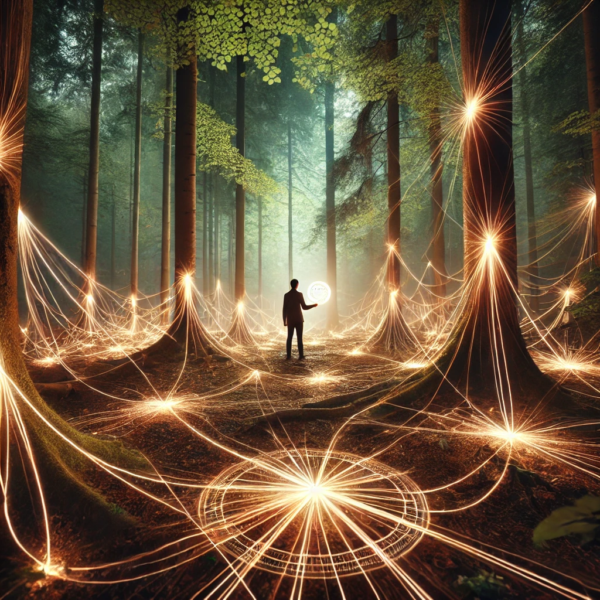

The compass glows softly in your hand, its pulse steady and rhythmic. You close your eyes and focus, feeling the currents of energy that ripple through the air around you. The forest seems alive, not just with its own vitality but with an unseen network of connections tying everything together.
As you attune yourself to these flows, you begin to sense patterns: energy rising and falling, moving with purpose yet effortlessly. The voice of the unseen speaks, resonant and clear:
“To understand the flow of energy is to understand life itself. Resistance creates friction; surrender creates harmony. Where there is balance, there is truth.”
Opening your eyes, you see streams of glowing light weaving through the forest, their paths intertwining and splitting in an endless dance. You feel called to explore these flows, to deepen your understanding.

How will you engage with the energy flow?